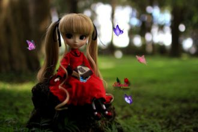
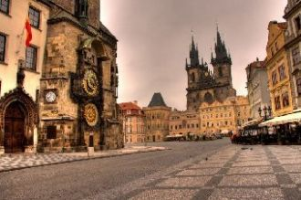
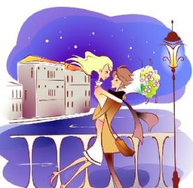
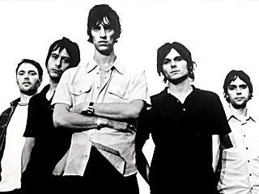

Χορωδία:Θέλω πολύ να ξαναζήσω καλοκαιρινές στιγμέςΟ ήλιος μου θέλω να γίνεις, λάδι στο κορμί να καιςΚαι σε χαμένες παραλίες, ζήτησε μου όσα θες
Σε θέλω εδώ για να μπορώόλα όσα ζω να’ναι δικά μουνα’σαι πληγή απ’την πληγήνα’σαι χαρά απ’τη χαρά μουνα’σαι εδώ γιατί η ζωή
Entends tu cette musique au fond de toi?Ferme les yeux c'est magique, elle te voit. Et ton coeur mécanique se déploie.

C'est pas l'histoire d'un jourQui rime avec amour,Plutôt un long séjourMais pas: un "pour toujours"
Αν θα θέλες να κάνειςακόμα πιο πολλά, Μα ο χρόνος τρέχει τόσοΠου απλά σε προσπερνά.Και αν ψάχνεις την αγάπη, Μα αυτή δε σ’ έχει βρει
Non chiedermi perché non sono ricco ho perso tutto ma

Всегда тепло встречает Чехии столица,Из разных стран и континентов ждет гостей.И посреди её красот повсюду лица
We can never let the word be unspoken.We will never let our loving go come undone.Everything we had is staying unbroken, oh.
Открытый космос посылал сигналы,И кто-то в страхе падал ниц, молясь,Но многие туда взгляд поднималиИ жаждали установить с ним связь.
Встречай новый день без меня.Встречай новый день без меня.
Развяжи мне руки,Обними за плечи,Отпусти на волю,И забудь меня.
Это история любви, мне слов не говори.Ведь, baby, ты права, в глаза мне посмотри. Мы встречались every day, I miss you every night.

Снежинки кружатся в задумчивом вальсе,Когда на свиданье с тобой я лечу.Сердечко – в подарок, сомненья – подальше,Сегодня, любимый, нам все по плечу.
Я бы ужасно хотела писать для тебя сонаты,Но получаются лишь эта сопливая ересь,Я уже точно знаю — ты не в списке моих фанатов,

'Cause it's a bittersweet symphony, this lifeTry to make ends meetYou're a slave to money then you die
Terre brûlée au vent Des landes de pierre, Autour des lacs, C'est pour les vivants Un peu d'enfer, Le Connemara.
Turn your magic onUmi she'd sayEverything you want's a dream awayAnd we are legends every dayThat's what she told me
Иногда все расстояния сильнее, чем любовь.И тогда одно желание - к тебе вернуться вновь.Дождём весенним в самом белом феврале
Припев:На стене в твоем подъезде я пишу тебе письмо,Начинаю на десятом, а закончу на восьмом.Ты обычная девчонка, я не принц и не герой,
Ростелеком - проводник в мир чудес,Ростелеком - вся книга тайн.Он не шлёт рекламу в СМС,Всегда на связи и он-лайн!
Разгорелась ночка ярко. За зарницею зарница. От чего сердечку жарко. От чего душа томится? Будто споря с тишиною.